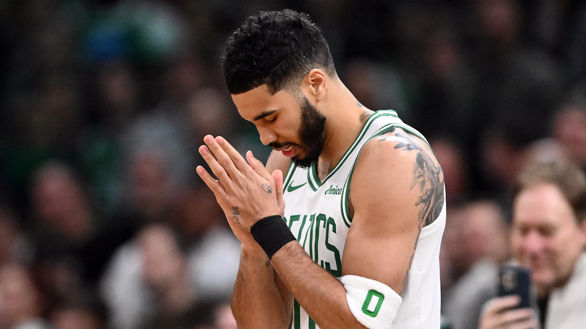

Jayson Tatum calls St. Louis, Missouri, home and continues to visit his family there, although his NBA career keeps him based in Boston, where he plays for the Celtics. He grew up in St. Louis and still considers it his home, enjoying the city's culture and spending time with family.
Jayson Tatum is an elite basketball player who is considered one of the best in the NBA, recognized as a perennial All-Star and a top-tier scorer and defender. He is a six-time All-Star and five-time All-NBA selection, and in 2024, he led the Boston Celtics to an NBA championship.
Jayson Tatum is an elite basketball player who is considered one of the best in the NBA, recognized as a perennial All-Star and a top-tier scorer and defender. He is a six-time All-Star and five-time All-NBA selection, and in 2024, he led the Boston Celtics to an NBA championship.
His career best for rebounds is 19, recorded on January 19, 2023, against the Golden State Warriors.As a freshman, Tatum averaged 13.3 points and 6.4 rebounds per game and was named 2013 Metro Catholic Conference (MCC) Co-Player of the Year, leading the Red Devils to both MCC and Missouri District 2 crowns.As a junior, Tatum averaged 25.9 points, 11.7 rebounds, and 3.4 assists per game, while earning Second-team Naismith Trophy All-American honors.